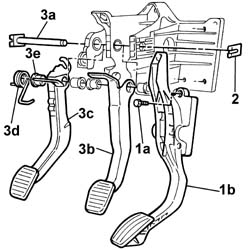
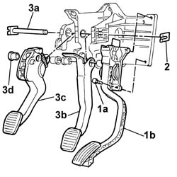

3330B16 pedal unit assembly - dismantle rebuild at bench
- Path
- Procedures > 33 BRAKES > 3330 HYDRAULIC BRAKE SYSTEM > 3330B pedal unit > 3330B16 pedal unit assembly - dismantle rebuild at bench
- Kind
- repair procedure (removal / refitting; the operation number is the code)
- Applies to
- engines: 1.2 8v, 1.9 DIESEL; all production periods
- Interactive page
- https://sloeber94.github.io/elrnDB-fDbl/en/#/2584647
Applies to: engines: 1.2 8v; all production periods
1. Undo bolts (1a) securing accelerator pedal (1b) to its mount and remove.
2. Remove the clip securing the clutch and brake pedal mounting.
3. Withdraw pin (3a) and remove brake pedal (3b) and clutch pedal (3c) complete with spring (3d) and bushes (3e).

Applies to: engines: 1.2 8v; all production periods
Position the brake pedal with bushes on the mount and partly insert the support pin.
Fit the clutch pedal complete with bushes and clip. insert the pin on the clutch pedal and secure using the retaining clip.
Position the accelerator pedal on the mount and secure with bolts.
Applies to: engines: 1.9 DIESEL; all production periods
1. Undo bolts (1a) securing accelerator pedal (1b) to the mount and remove.
2. Remove the clutch and brake pedal mounting pin retaining clip.
3. Withdraw pin (3a) and remove brake pedal (3b) and clutch pedal (3c) complete with bushes (3d).

Applies to: engines: 1.9 DIESEL; all production periods
Place the brake pedal with bushes on the mount and partly insert the mounting pin.
Fit the clutch pedal with bushes; insert the pin on the clutch pedal and secure using the retaining clip.
Place the accelerator pedal on the mount and secure with bolts.